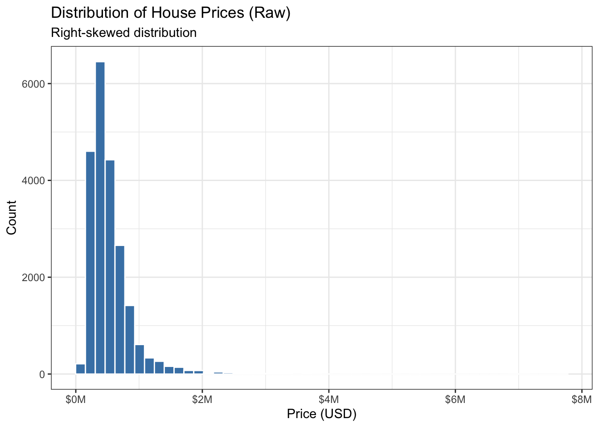
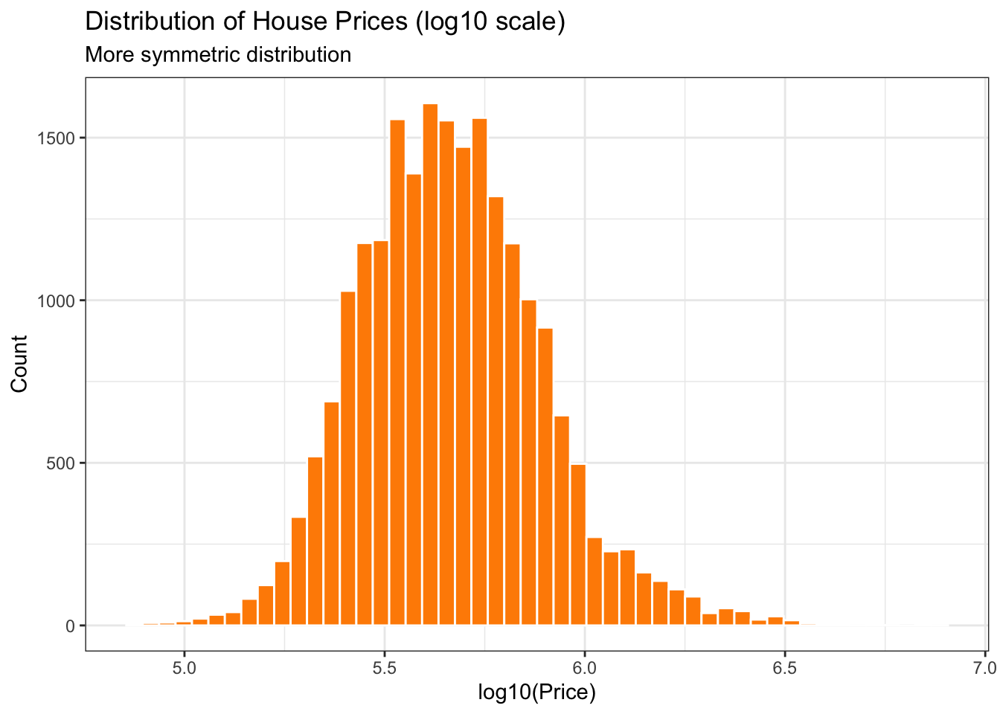
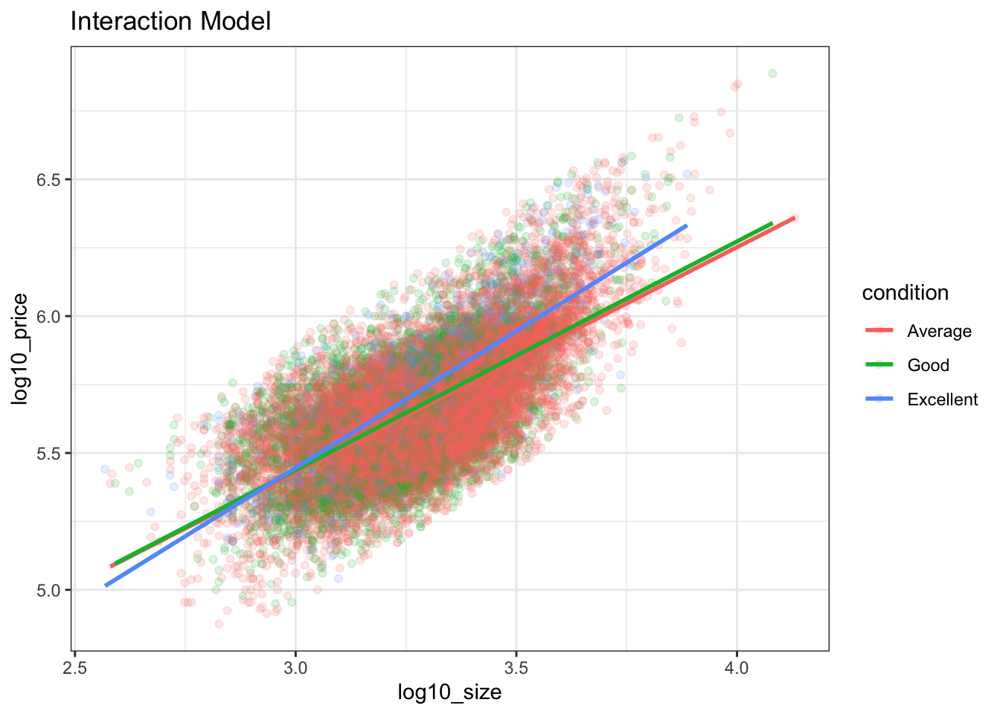
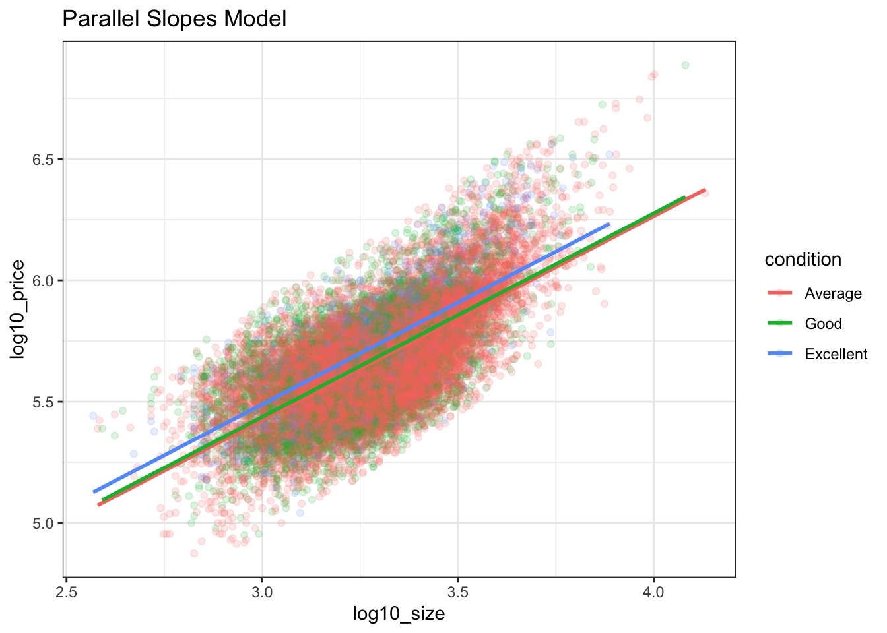
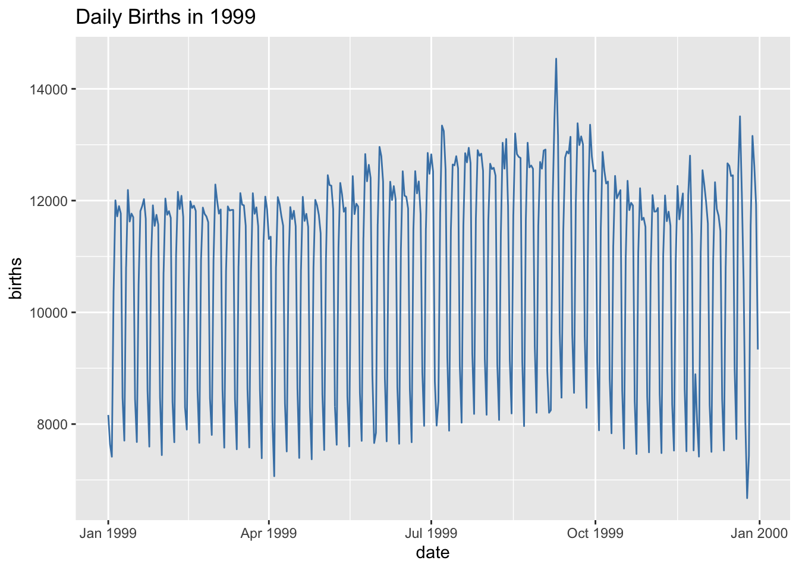
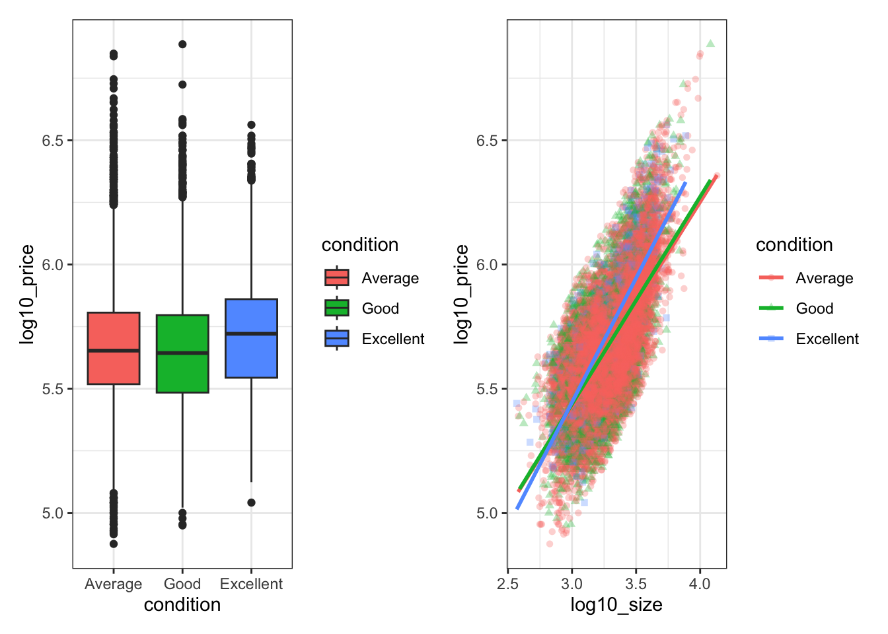
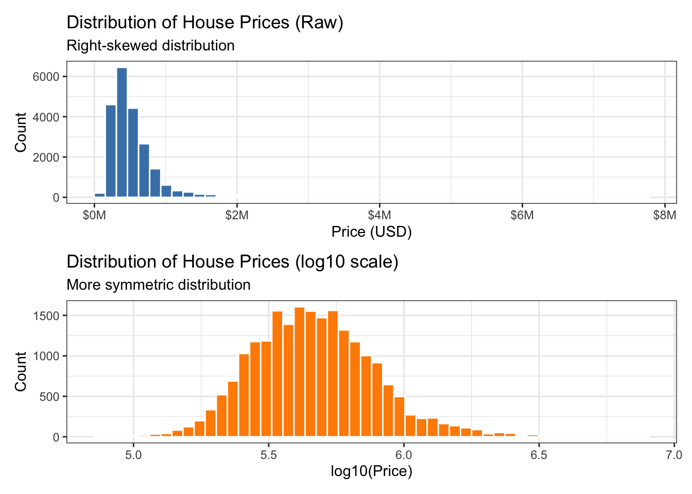
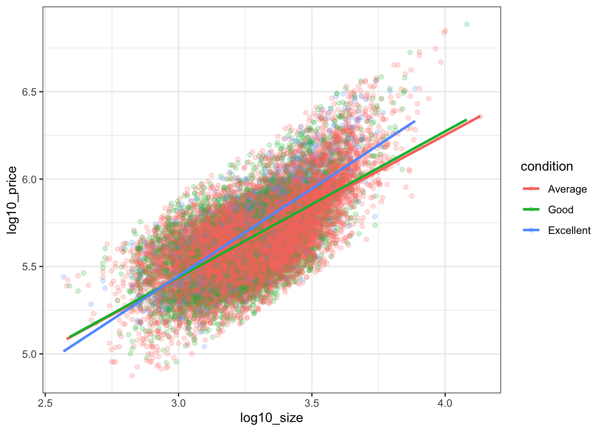
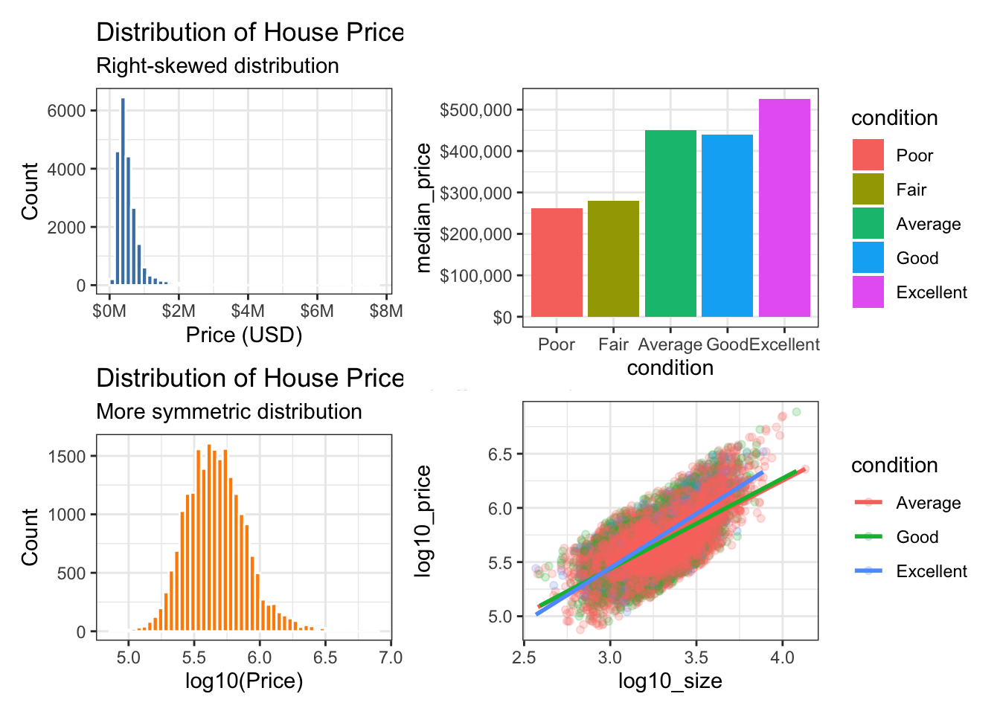

Code
# Install if needed
# install.packages(c("tidyverse", "moderndive", "fivethirtyeight",
# "patchwork", "scales", "shiny"))
library(tidyverse)
library(moderndive)
library(fivethirtyeight)
library(patchwork)
library(scales)This lab explores data storytelling using R through: - Exploratory data analysis (EDA) - Transformations and skewness - Regression visualization - Time series anomalies - Composite plots - Interactive visualization (Shiny) - A capstone narrative
# Install if needed
# install.packages(c("tidyverse", "moderndive", "fivethirtyeight",
# "patchwork", "scales", "shiny"))
library(tidyverse)
library(moderndive)
library(fivethirtyeight)
library(patchwork)
library(scales)data("house_prices")
p1_raw <- ggplot(house_prices, aes(x = price)) +
geom_histogram(bins = 50, fill = "steelblue", color = "white") +
scale_x_continuous(labels = label_dollar(scale = 1e-6, suffix = "M")) +
labs(
title = "Distribution of House Prices (Raw)",
subtitle = "Right-skewed distribution",
x = "Price (USD)",
y = "Count"
) +
theme_bw()
p1_raw
house_prices <- house_prices %>%
mutate(
log10_price = log10(price),
log10_size = log10(sqft_living)
)
p1_log <- ggplot(house_prices, aes(x = log10_price)) +
geom_histogram(bins = 50, fill = "darkorange", color = "white") +
labs(
title = "Distribution of House Prices (log10 scale)",
subtitle = "More symmetric distribution",
x = "log10(Price)",
y = "Count"
) +
theme_bw()
p1_log
The raw distribution is heavily right-skewed due to high-value outliers.
The log transformation reveals a more symmetric, near-normal distribution, improving interpretability.
house_prices <- house_prices %>%
mutate(condition = factor(condition, levels = 1:5,
labels = c("Poor","Fair","Average","Good","Excellent")))
house_sub <- house_prices %>%
filter(condition %in% c("Average", "Good", "Excellent"))p2_interaction <- ggplot(house_sub,
aes(x = log10_size, y = log10_price, color = condition)) +
geom_point(alpha = 0.15) +
geom_smooth(method = "lm", se = FALSE) +
labs(title = "Interaction Model") +
theme_bw()
p2_interaction
p2_parallel <- ggplot(house_sub,
aes(x = log10_size, y = log10_price, color = condition)) +
geom_point(alpha = 0.15) +
moderndive::geom_parallel_slopes(se = FALSE) +
labs(title = "Parallel Slopes Model") +
theme_bw()
p2_parallel
Slopes are similar across conditions, supporting a simpler parallel slopes interpretation: - Size affects price consistently - Condition shifts baseline price
data("US_births_1994_2003")
births_1999 <- US_births_1994_2003 %>%
filter(year == 1999) %>%
mutate(date = as.Date(paste(year, month, date_of_month, sep = "-")))ggplot(births_1999, aes(x = date, y = births)) +
geom_line(color = "steelblue") +
labs(title = "Daily Births in 1999")
births_1999 %>%
arrange(desc(births)) %>%
head()# A tibble: 6 × 6
year month date_of_month date day_of_week births
<int> <int> <int> <date> <ord> <int>
1 1999 9 9 1999-09-09 Thurs 14540
2 1999 12 21 1999-12-21 Tues 13508
3 1999 9 8 1999-09-08 Wed 13437
4 1999 9 21 1999-09-21 Tues 13384
5 1999 9 28 1999-09-28 Tues 13358
6 1999 7 7 1999-07-07 Wed 13343The largest spike occurs on September 9, 1999 (9/9/99), likely due to cultural preferences influencing scheduled births.
p4a <- ggplot(house_sub,
aes(x = condition, y = log10_price, fill = condition)) +
geom_boxplot() +
theme_bw()p4b <- ggplot(house_sub,
aes(x = log10_size, y = log10_price,
color = condition, shape = condition)) +
geom_point(alpha = 0.3) +
geom_smooth(method = "lm", se = FALSE) +
theme_bw()p4a | p4b
Run separately as
app.R
# shinyApp(ui, server)(App code omitted in rendering but included in source file)
cap1 <- p1_raw / p1_log
cap1
cap3 <- ggplot(house_sub,
aes(x = log10_size, y = log10_price, color = condition)) +
geom_point(alpha = 0.2) +
geom_smooth(method = "lm", se = FALSE) +
theme_bw()
cap3
cap1 | (cap2 / cap3)
#! eval: false
library(shiny)
house_shiny <- house_prices %>%
filter(condition %in% c("Average", "Good", "Excellent"))
ui <- fluidPage(
titlePanel("House Prices Explorer"),
sidebarLayout(
sidebarPanel(
selectInput("condition_select", "Condition:",
choices = c("Average", "Good", "Excellent"))
),
mainPanel(plotOutput("scatter_plot"))
)
)
server <- function(input, output) {
filtered_data <- reactive({
house_shiny %>% filter(condition == input$condition_select)
})
output$scatter_plot <- renderPlot({
ggplot(filtered_data(),
aes(x = log10_size, y = log10_price)) +
geom_point(alpha = 0.3) +
geom_smooth(method = "lm") +
theme_bw()
})
}
shinyApp(ui, server)For the final part of the lab, you must produce a coherent data story that includes: